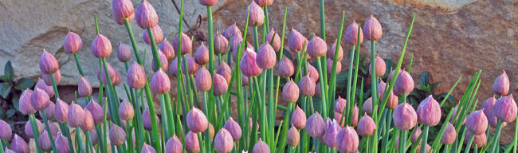

New Composting Workshop!
Our next workshop is entitled “Everything You Need to Know About Composting.” This informative workshop will be great for any gardener, whether you plan to invest in a commercial compost bin or simply start a compost pile in a corner of your garden. You will be amazed at how quickly you can produce rich, nutrient-filled compost with only a little effort. Use this black gold to amend your soil naturally, to encourage the growth of healthy plants. Not only will you create rich soil and save water—you will also reduce trash at the landfill by recycling your kitchen scraps and garden materials.
We offer this free workshop on a first-come, first-served basis. All workshop participants will receive a packet of bacteria to kick-start their composting process. Our speaker will be Ann Porter from the County Extension Office. Ann recently completed her Master Composter Certification and is eager to share her knowledge. She is an engaging speaker you will be sure to enjoy. Call 555-248-0806 today to reserve your spot!
